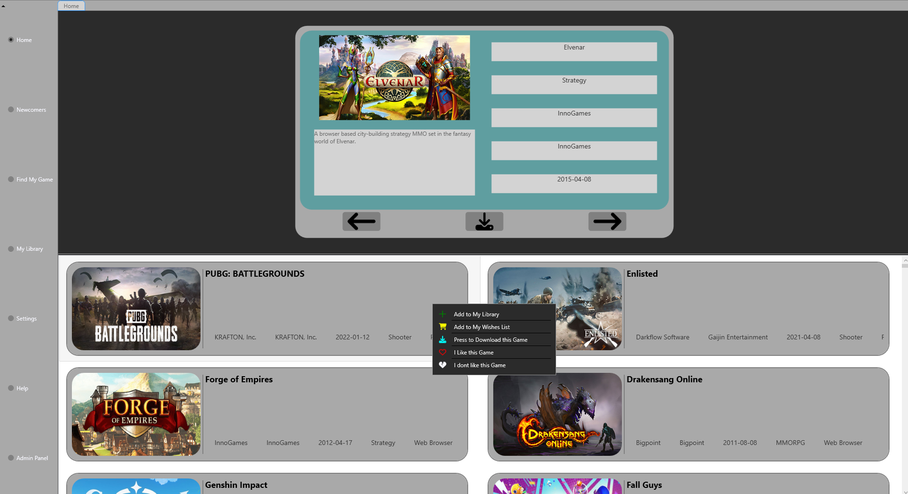
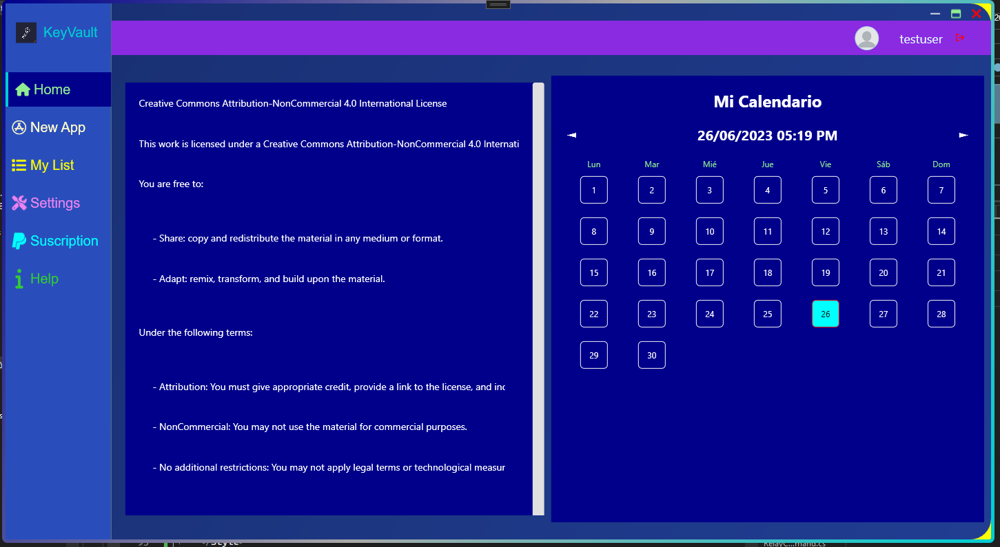
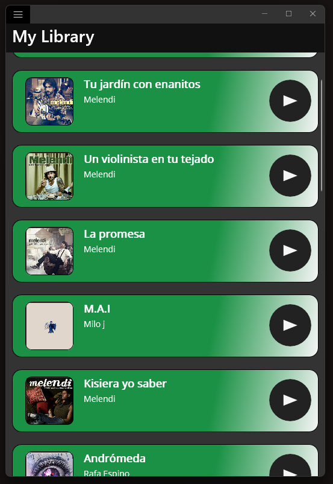

Product development
ERP and B2B applications in real use, evolved end to end.
BUSINESS SOFTWARE · BACKEND · INTEGRATIONS
I'm DaniDev, a Software Developer with experience in production ERP, APIs, integrations and standalone B2B applications. I work end to end with C#/.NET, VB.NET, SQL Server and Azure, from analysis through production support. I'm looking to keep growing in product engineering teams.
OWN PRODUCT · IN REAL USE
REAL CUSTOMERS AND USERSA multi-inventory app for tracking stock and coordinating operations across web and mobile.
I designed nearly all of the architecture and C# backend foundation. AI mainly supported frontend implementation; I reviewed and integrated those changes.
01 / PROFILE
Professional experience since 2023. Interested in .NET, backend and integration roles.
I turn operational needs into maintainable changes for software already used by people and businesses.
My experience combines product development, APIs and integrations, production support and data work. I understand existing rules, implement changes, then support validation and delivery.
ERP and B2B applications in real use, evolved end to end.
APIs, data, authentication and cross-system workflows.
Support, concurrency, persistence and delivery quality.
02 / STACK AND DOMAINS
Technologies evidenced by my work and projects, without padding the stack with generic tools.
C# · VB.NET · .NET · WinForms · WPF · .NET MAUI · APIs
SQL Server · T-SQL · stored procedures · OAuth 2.0 · service integration
Azure · Git · code review · cherry-picks · integration testing · CI · agent automation
BUSINESS DOMAINS
SKILL · AI-ASSISTED ENGINEERING
I use a private system of specialist agents to support planning, implementation and testing. Deterministic automation and isolated workspaces help delegate tasks; I review and integrate changes before they are adopted.
ARCHITECTURE · PUBLIC OVERVIEW
Code handles repeatable mechanics; agents support analysis, while I retain technical judgement and final approval.
03 / PERSONAL PROJECTS

A C# and WPF desktop app for organising a video-game library and exploring recommendations based on user preferences.

A WPF desktop app using MVVM to manage credentials. Includes a password generator and RSA-encrypted storage; role management is incomplete, as noted in the repository.

An experimental .NET MAUI project exploring OAuth 2.0 authentication and integration with an external API.
04 / EXPERIENCE
Professional experience since 2023 across production ERP software, standalone B2B applications, support and system integration.
Production software, user support and incident investigation.
More ownership of features, integrations and standalone B2B applications.
Code reviews, release coordination and engineering automation.
Development, maintenance and support of business software products, with ownership across a broad range of work.
05 / PRODUCTION WORK
Anonymised examples across integrations, B2B applications and product reliability.
BUSINESS SOFTWARE · COMPLIANCE
Tax regulation affects more than invoice output: it requires traceability, valid states, corrections and consistent data throughout a document's lifecycle.
Developed and maintained changes across regulated workflows, including corrections, validation, audit records and data consistency.
I treated the work as a connected business and data flow: each change had to fit existing rules and preserve consistency between line items, totals and document states.
Regulatory features were incorporated into product releases and refined over multiple delivery cycles.
APIS · DATA · SYSTEM INTEGRATION
Built and extended services connected to business processes, with attention to contracts, persistence and compatibility with existing consumers.
Implemented OAuth 2.0 authentication for email providers, interactive authorisation and token renewal for SMTP delivery.
Connected applications to external data sources and equipment through structured formats, scheduled processes and data imports.
Generated XML validated against schemas and accounted for processing errors, business rules and downstream data flows.
STANDALONE B2B APPLICATION · DATA IMPORT
Business data arrived in Excel files but had to conform to the destination database schema and constraints.
Built a standalone B2B application, separate from the ERP, with a generic importer. Templates map spreadsheet data to the destination database and its constraints.
I kept the tool independent from the ERP and used templates to configure mappings, making destination constraints part of the import process.
A reusable import workflow configured through templates rather than coupled to a specific ERP module.
RELIABILITY · SECURITY · TEAM QUALITY
In an evolving product, some failures stem from thread interactions and shared state. Cross-cutting persistence changes such as soft deletion also affect existing queries and workflows.
Fixed concurrency and race-condition issues and integrated soft deletion by updating queries and workflows to respect record state. Also fixed SQL-injection risks, protected credentials and isolated write failures that could close the application.
During a PR review, I identified a data-access pattern that could fail when transactions were introduced. I turned that reasoning into a reusable team review guideline and considered how persistence changes affected existing consumers.
Reduced exposure of sensitive data and avoidable failures, a preventive review standard, and nightly CI for an integration-test suite.
Looking for an engineer to evolve a complex product?
Let's talk06 / NEXT STEP
I'm exploring .NET, backend and integration roles. If you are hiring or want to discuss business software, feel free to get in touch.
danidevsdbk@gmail.com